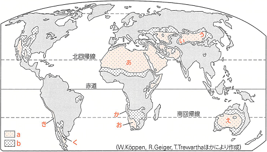
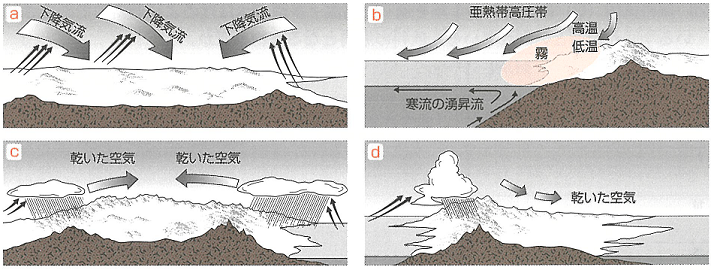

| 番号 | 問題 | 解答 |
|---|---|---|
| 1 | 年降水量が250mm未満の地域のように、人類が常住していない地域を何というか。 | アネクメーネ |
| 2 | 地球上の陸地面積のうち、乾燥帯が占める割合は何分の1か。 | 4分の1 |
| 3 | サハラ砂漠のように回帰線付近の亜熱帯高圧帯が成因の砂漠を何というか。 | 回帰線砂漠 |
| 4 | ゴビ砂漠のように隔海度が大きいことが成因の砂漠を何というか。 | 内陸砂漠 |
| 5 | 雨陰砂漠といわれる、卓越風に対して山脈の風下側にあることが成因で乾燥している南アメリカ南部の地域はどこか。 | パタゴニア |
| 6 | 海岸砂漠といわれる、沿岸の寒流が成因の南アメリカ西岸沿いの砂漠名は何というか。 | アタカマ砂漠 |
| 7 | 砂漠の中で湧水や河川などを利用して植物が生育することができる場所を何というか。 | オアシス |
| 8 | 降雨のときだけ水流がみられる砂漠にできる涸れ川を何というか。 | ワジ |
| 9 | エジプトのナイル川のように湿潤地域に源流があり砂漠を貫流する河川を何というか。 | 外来河川 |
| 10 | 活発な水分の蒸発にともない、地中の塩分が地表付近に集積した土壌を何というか。 | 塩性土壌 |
| 11 | BW気候において、木材が乏しいことや高い断熱性があることで伝統的な家屋に使用される素材は何か。 | 日干しレンガ |
| 12 | 気候区分でBSと表記される気候の名称ともなっている草丈の短い草原を何というか。 | ステップ |
| 13 | BS気候のうち比較的降水量が多い地域では乾季に草が枯れて腐食するため、非常に肥沃で黒色の土壌が生まれる。その土壌を何というか。 | 黒(色)土 |
| 14 | 13は、ウクライナからシベリアの範囲では何と呼ばれているか。 | チェルノーゼム |
| 15 | 13は、アメリカ中央部の地域では何と呼ばれているか。 | プレーリー土 |
| 16 | 砂漠や12の乾燥地域でみられる牛や馬、ラクダなどの家畜を牧草や水を求めて住居を移動しながら生活する形態を何というか。 | 遊牧 |
| 17 | モンゴルではゲルと呼ばれ、遊牧民の移動生活に用いる組み立て式テントの中国での名称は何か。 | パオ |
| 18 | サハラ砂漠の南縁に位置し、過放牧や過耕作で砂漠化が深刻化している地域を何というか。 | サヘル |
| 19 | アメリカのグレートプレーンズでみられる灌漑方式で、地下水をくみ上げ移動式スプリンクラーで散水する灌漑施設を何というか。 | センターピボット |
| 20 | アルゼンチンのラプラタ川流域に広がる草原地帯のうち、BS気候に属する西側の降水量550mm以下の地域を何というか。 | 乾燥パンパ |

